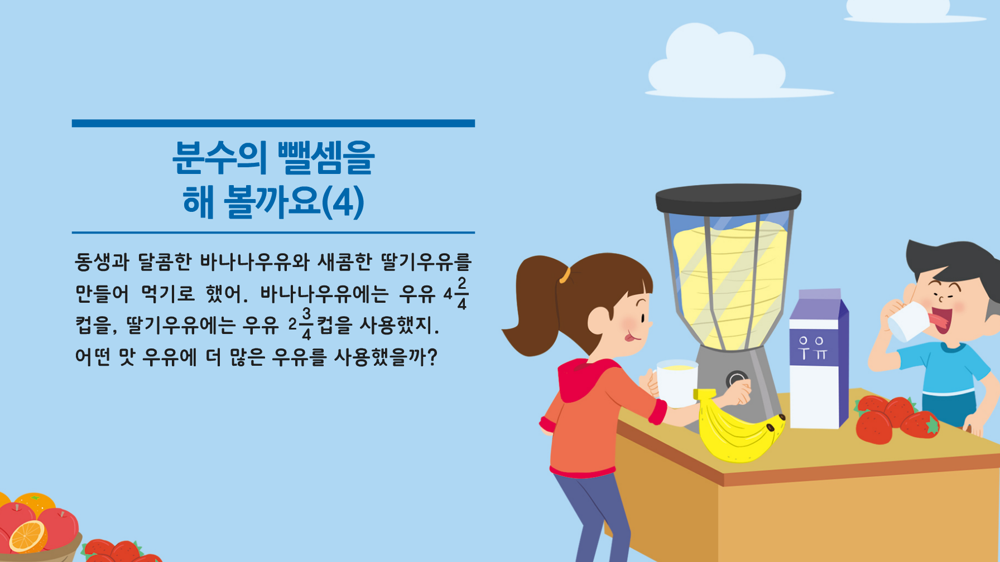

한 걸음 더
한 걸음 더
실생활에서 대분수의 뺄셈 알아보기
함께 요리를 만들고 나누어 먹어 본 경험이 있나요?
두부 만들기 체험을 해 본 적이 있습니다. 친구들과 두부를 만들어 사이좋게 나누어 먹었습니다.
부모님께 과일주스를 만들어 드린 적이 있습니다.
요리를 할 때, 재료의 양은 어떻게 나타내나요?
몇 분의 몇 컵, 몇 분의 몇 큰술 등으로 나타냅니다.
두 가지 맛 우유를 만드는 데 사용한 우유의 양은 얼마인가요?
바나나우유를 만드는 데 우유 4
2
/
4
컵을 사용했고, 딸기우유를 만드는데 우유 2
3
/
4
컵을 사용했습니다.
어떤 맛 우유에 더 많은 우유를 사용했나요?
바나나우유를 만드는 데 더 많은 우유를 사용했습니다.